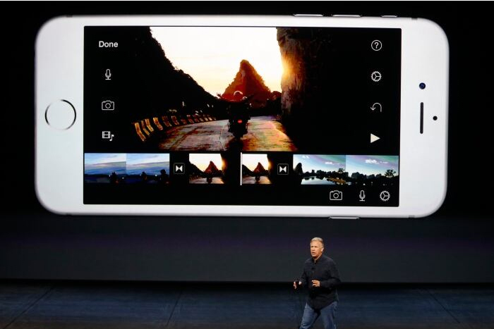
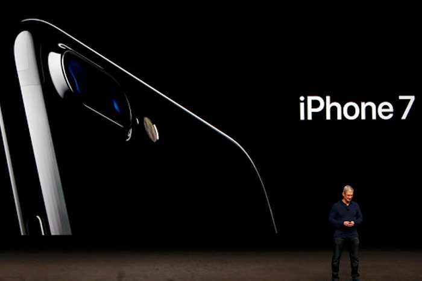
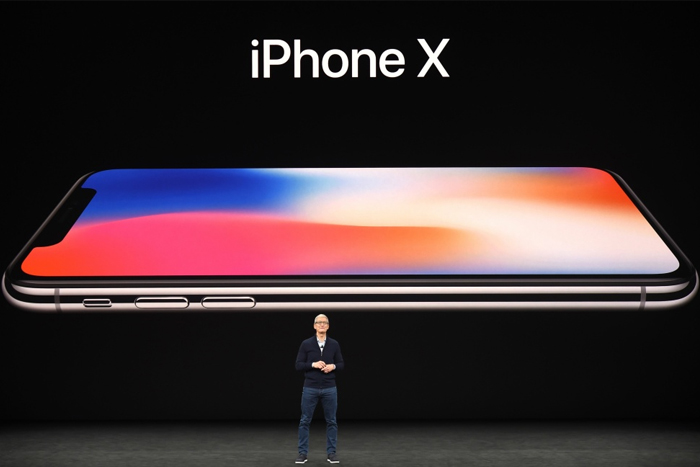
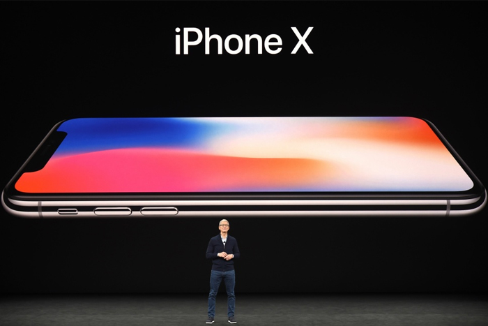
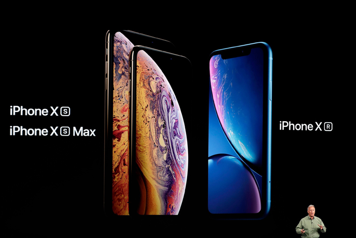

A Decade of iPhone
Timeline - Rise To Success
-
The iPhone 6 & 6 Plus
September 25, 2014The iPhone 6 was the second redesign The next redesign was here. The iPhone gained a larger screen and was offered in two models. Plus it became one of the lightest smartphones ever made. Apple Pay was revealed and incorporated into the iPhone 6 for easy mobile payments.
-
iPhone 6S & 6S Plus
September 25, 2015 The iPhone 6S brought unbelieveable speeds to a smartphone More speed was added to the iPhone, the cameras got an upgrade too. The materials used for it were stronger because many users complained that the previous iPhone model was bending.
-
iPhone 7 & 7 Plus
September 16, 2016 Tim Cook announcing the iPhone 7 A minor redesigned was given to the iPhone. It was now a reality to take professional pictures with the iPhone thanks to a dual-camera system added to the iPhone 7 Plus.
-
10 Years of iPhone
September 22, 2017 
The iPhone 8 and X were announced together at Apple's September Event The iPhone X was a major redesign and reinvention of the iPhone. This device became the top flagship for Apple. Touch ID was replaced with Face ID, a face recognition feature that Apple took years to develop.
-
The iPhone XS to Success
September 21, 2018 Three iPhones were announced. The iPhone XR became the budget-friendly iPhone The iPhone XS was another speed upgrade, features were the same as the previous iPhone. The iPhone XR was a new model announced that had similar features as the iPhone XS, but the costs of its components were significantly cheaper.
-
The iPhone 11 Pro
September 20, 2019The Current iPhone 11 Pro shown in an Ad This is the current iPhone, an outstanding smartphone with impressive cameras and water resistant design. Despite having similar physical design that its predecessor, this iPhone has the internals and speed of a high end laptop.